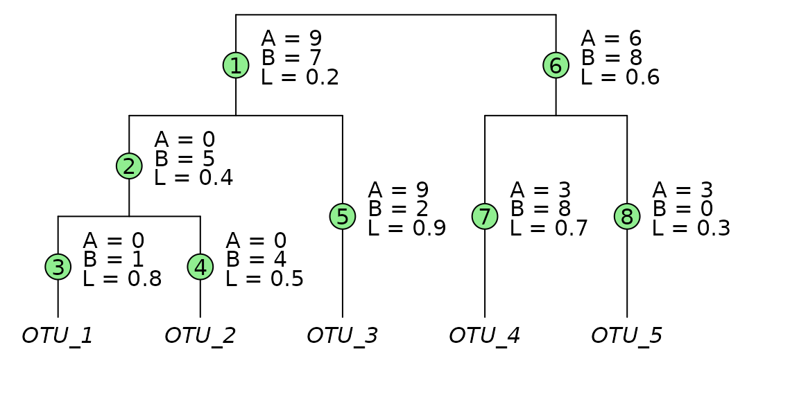

Introduction
The different UniFrac algorithms are listed below, along with examples for calculating them.
Input Data
json <- '{"id":"","comment":"","date":"2025-01-29T22:14:00Z","format":"1.0.0","type":"OTU table","format_url":"http://biom-format.org","generated_by":"rbiom 2.0.13","matrix_type":"sparse","matrix_element_type":"int","shape":[5,2],"phylogeny":"(((OTU_1:0.8,OTU_2:0.5):0.4,OTU_3:0.9):0.2,(OTU_4:0.7,OTU_5:0.3):0.6);","rows":{"1":{"id":"OTU_1"},"2":{"id":"OTU_2"},"3":{"id":"OTU_3"},"4":{"id":"OTU_4"},"5":{"id":"OTU_5"}},"columns":[{"id":"Sample_1"},{"id":"Sample_2"}],"data":[[2,0,9],[3,0,3],[4,0,3],[0,1,1],[1,1,4],[2,1,2],[3,1,8]]}'
biom <- rbiom::as_rbiom(json, underscores = TRUE)
mtx <- t(as.matrix(biom))
phy <- biom$tree
L <- phy$edge.length
A <- c(9,0,0,0,9,6,3,3)
B <- c(7,5,1,4,2,8,8,0)- An OTU matrix with two samples and five OTUs.
- A phylogenetic tree for those five OTUs.
knitr::kable(mtx, format="html", table.attr='class="otu_matrix" cellspacing="0"', align='c')| OTU_1 | OTU_2 | OTU_3 | OTU_4 | OTU_5 | |
|---|---|---|---|---|---|
| Sample_1 | 0 | 0 | 9 | 3 | 3 |
| Sample_2 | 1 | 4 | 2 | 8 | 0 |
par(xpd = NA)
plot(
x = phy,
direction = 'downwards',
srt = 90,
adj = 0.5,
no.margin = TRUE,
underscore = TRUE,
x.lim = c(0.5, 5.5) )
ape::edgelabels(phy$edge.length, bg = 'white', frame = 'none', adj = -0.4)Definitions
The branch indices (green circles) are used for ordering the , , and arrays. Values for are drawn from the input phylogenetic tree. Values for and are the total number of OTU observations descending from that branch; for Sample_1, and for Sample_2.
local({
phy$edge.length <- c(1, 1, 1, 1, 2, 1, 2, 2)
par(xpd = NA)
plot(
x = phy,
direction = 'downwards',
srt = 90,
adj = 0.5,
no.margin = TRUE,
underscore = TRUE,
x.lim = c(.8, 6) )
ape::edgelabels(1:8, frame = 'circle')
ape::edgelabels(paste('A =', A), bg = 'white', frame = 'none', adj = c(-0.4, -1.2))
ape::edgelabels(paste('B =', B), bg = 'white', frame = 'none', adj = c(-0.4, 0.0))
ape::edgelabels(paste('L =', L), bg = 'white', frame = 'none', adj = c(-0.3, 1.2))
})
| Number of branches | |
| Branch weights for Sample_1. | |
| Branch weights for Sample_2. | |
| Total OTU counts for Sample_1. | |
| Total OTU counts for Sample_2. | |
| The branch lengths. |
Unweighted
- Lozupone et al, 2005: Unweighted UniFrac
- R Package rbiom:
bdiv_matrix(bdiv = "unifrac", weighted=FALSE) - R Package phyloseq:
UniFrac(weighted=FALSE) - R Package abdiv:
unweighted_unifrac() -
qiime2
qiime diversity beta-phylogenetic --p-metric unweighted_unifrac -
mothur:
unifrac.unweighted()
First, transform A and B into presence (1) and absence (0) indicators.
Then apply the formula:
Weighted
- Lozupone et al, 2007: Raw Weighted UniFrac
- R Package rbiom:
bdiv_matrix(bdiv = "unifrac", weighted=TRUE, normalized=FALSE) - R Package phyloseq:
UniFrac(weighted=TRUE, normalized=FALSE) - R Package abdiv:
weighted_unifrac() -
qiime2
qiime diversity beta-phylogenetic --p-metric weighted_unifrac
Normalized
- Lozupone et al, 2007: Normalized Weighted UniFrac
- R Package rbiom:
bdiv_matrix(bdiv = "unifrac", weighted=TRUE, normalized=TRUE) - R Package phyloseq:
UniFrac(weighted=TRUE, normalized=TRUE) - R Package abdiv:
weighted_normalized_unifrac() -
qiime2
qiime diversity beta-phylogenetic --p-metric weighted_normalized_unifrac -
mothur:
unifrac.weighted()
Generalized
- Chen et al. 2012: Generalized UniFrac
- R Package GUniFrac:
GUniFrac(alpha=0.5) - R Package abdiv:
generalized_unifrac(alpha = 0.5) -
qiime2
qiime diversity beta-phylogenetic --p-metric generalized_unifrac -a 0.5
Variance Adjusted
- Chang et al, 2011: Variance Adjusted Weighted (VAW) UniFrac
- R Package abdiv:
variance_adjusted_unifrac() -
qiime2
qiime diversity beta-phylogenetic --p-metric weighted_normalized_unifrac --p-variance-adjusted